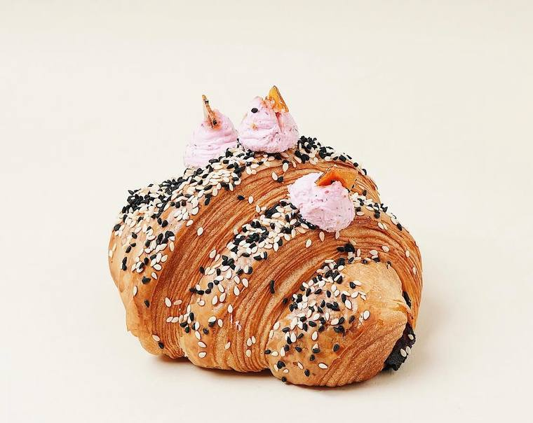
Croissantsكرواسون
- Plain croissant 9 SR
- Gruyère & zaatar
- Chili cheese
- Sesame, turkey & herbed cheese
Pastry · Coffee · Bakehouse
برانزويك — الدمام والخبر
Since 2021 · Dammam
A bakehouse first and a café second. The first Brunswick opened in Dammam in 2021; there are three now, and the method has not changed. Dough is folded, rested and baked in small batches through the morning, and what comes out of the oven is what is on the counter.
Croissant dough is folded and rested on site rather than bought in — which is why the cross-sections show open, uneven honeycomb rather than a uniform crumb.
Doors open at six. Trays come out in batches rather than all at once, so what is on the counter at nine is not what was there at seven.
The savoury side runs alongside the pastry: sesame-crusted croissants with turkey and herbed cheese, feta and fig focaccia, burrata.
The Range

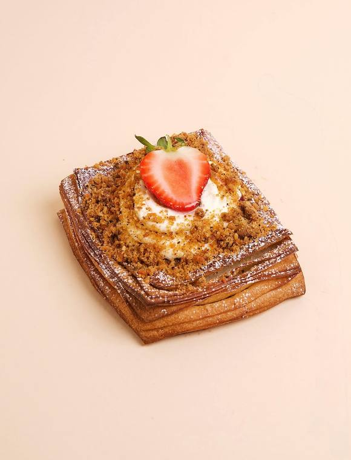
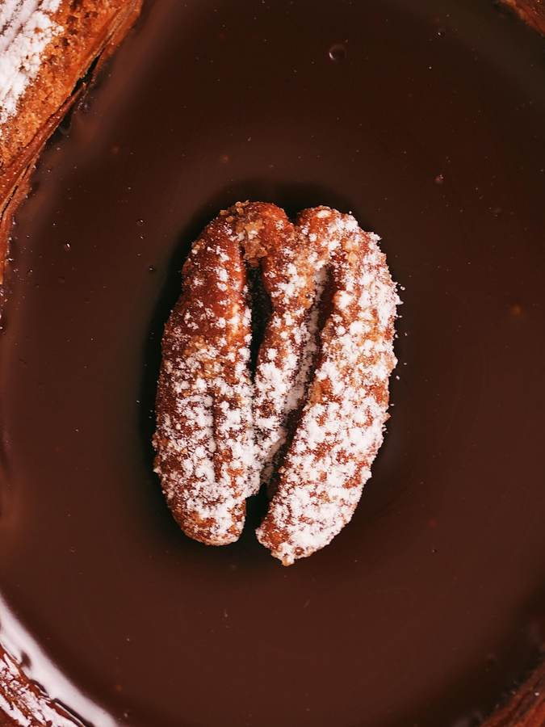
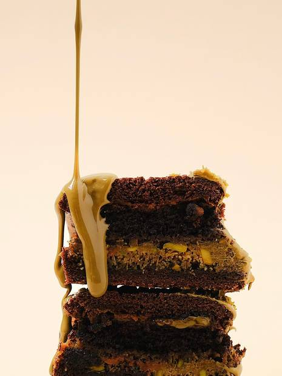
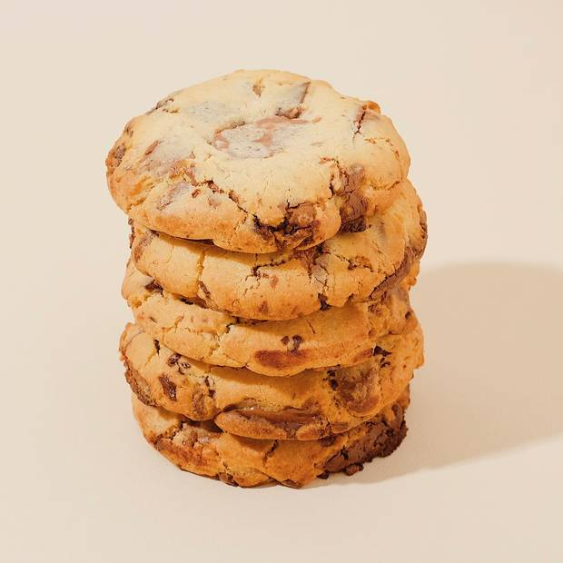
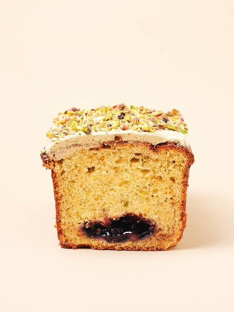
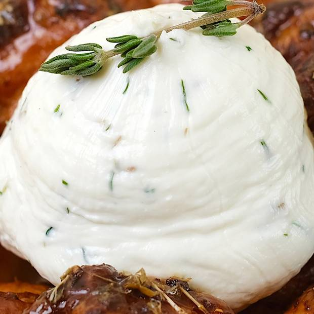
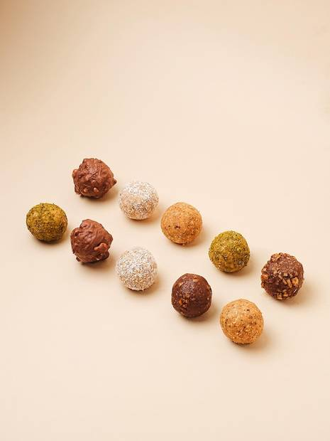
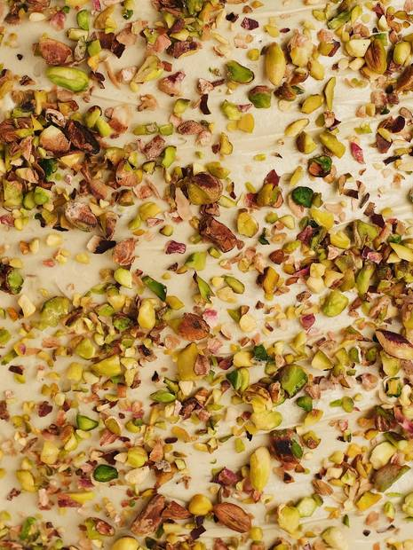
Prices shown are the two confirmed publicly; the rest are on the counter menu and are not published here rather than guessed at.
Brunswick
Coffee
Coffee is made at the counter on La Marzocco machines with Anfim grinders, ground to order beside the pastry case rather than in a back room.
The Rooms
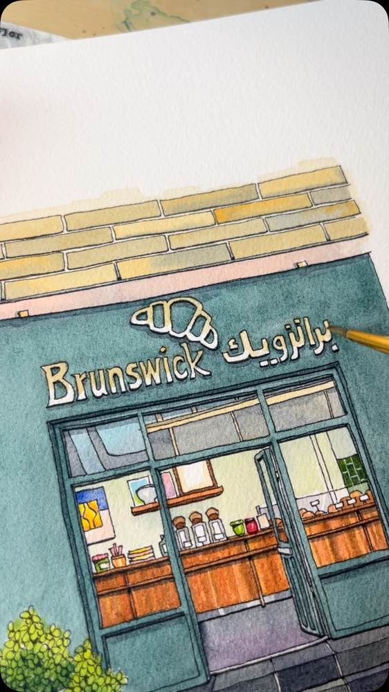
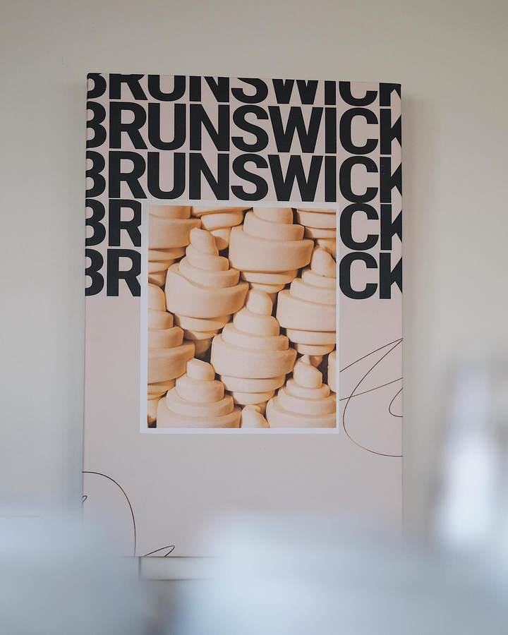
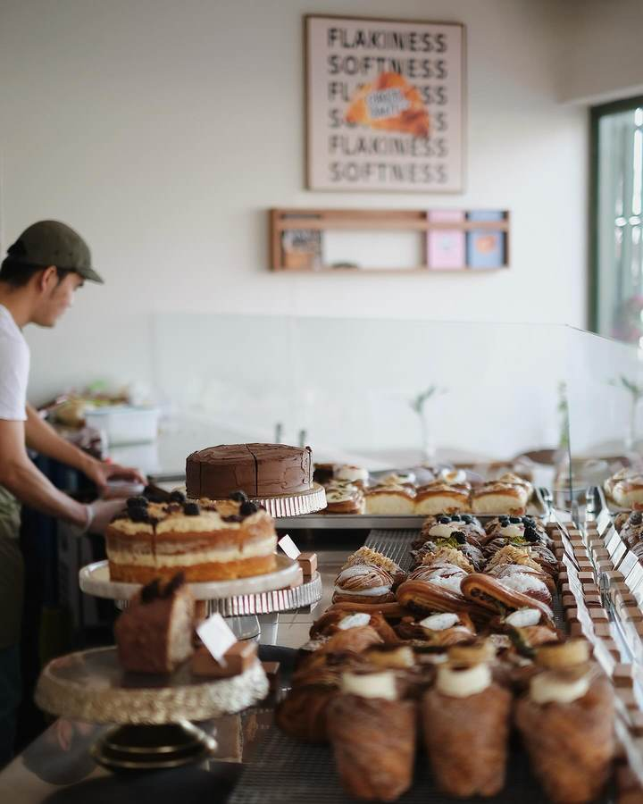
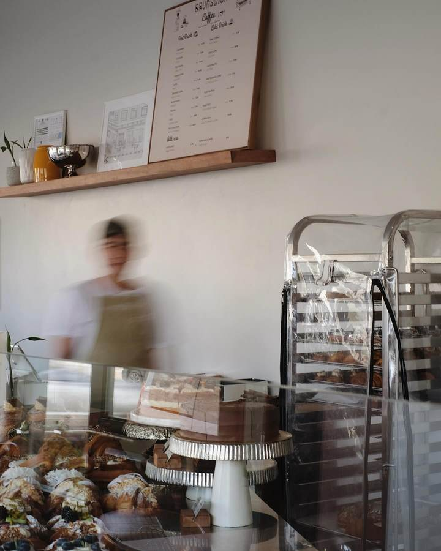
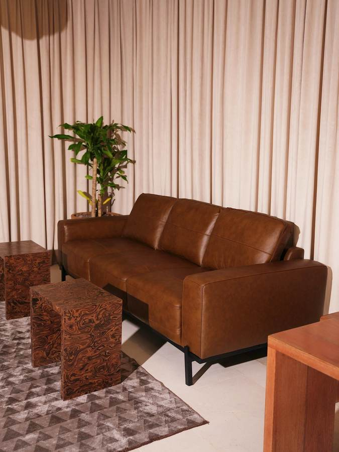
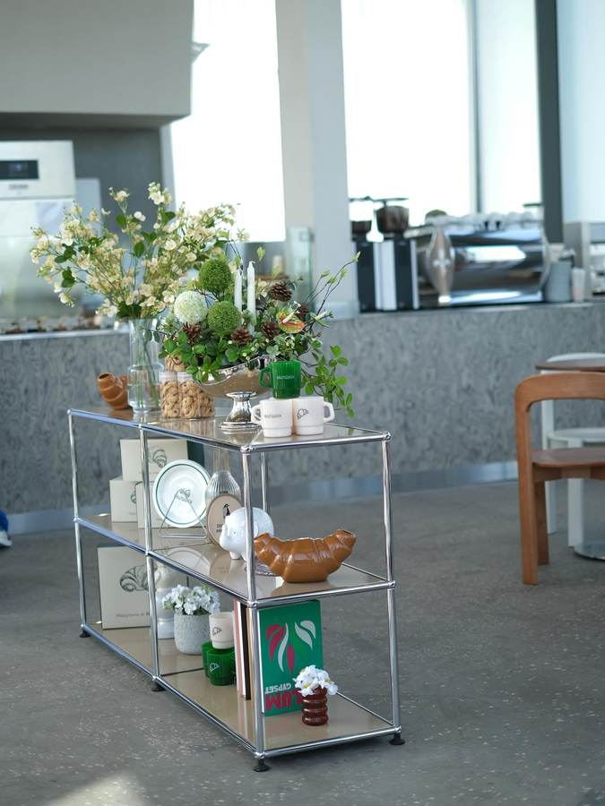
Visit
Full addresses for the two Khobar branches are on their Google listing; only the Dammam address is published here because it is the one I could confirm.
Order
Pastry boxes for meetings and gatherings, and cakes finished with a name. Send the date, the headcount and what you want on it.
WhatsApp number still to be supplied — the button is wired and inactive until then.